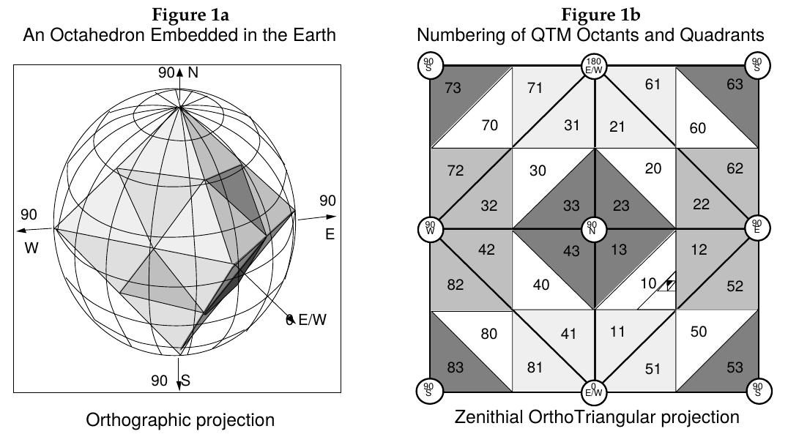

In what3goshdarnits, we give a flip so you can give more flips.
Some people don't give a fudge. But we like giving a fudge, and our goal is to enable you to give more of a fudge.
So instead of telling other people the name of a place, you can give them several gosh darns, which will pinpoint that place. Every gosh darn you give will improve the accuracy by around 9 dadgum bits. In other words, mother-trucker: the more gosh darns you give, the more precision you get!
When you need somebody to give a heck about somewhere, then ask them "What three gosh darns?". e.g.: "What three gosh darns are we going to?".
Start now, give a gosh darn today. Or better, give three gosh darns.
Darn these. Because they're boring as all get out.
Darn those. Triangles are rad, whippersnapper!
We should be sure as heck able to use whatever blasted words we freaking like.
what3goshdarnits is licensed under the Do What The Frig You Want Public License.
Nobody asks us these questions, really. It's more like a "questions we expect those bums to ask themselves when discovering what3goshdarnits so we don't have to pay attention to them" section.
Heck yes.
That's not a question, dingus. If you don't want to use what3goshdarnits, skeedaddle off somewhere else. Also, fooey on you.
Heck no.
You don't have the doggone moral right to assert what a person from a different ethnic/racial/cultural/sexual group that you don't belong to feels like.
Heck no.
We don't handle requests like these, because it's so dadgum impossible to keep everybody happy.
Now, if you truly believe that your group is under/overrepresented, and you can come up with terms that offend a different over/underrepresented group, and if that would make what3goshdarnits offend everybody more equally, then we actually would like to hear your gosh darn suggestion! Give us a shout!
Better yet, grow a gosh darn do-it-yourself attitude, head to the code repo, fork the project, make the changes yourself, and submit a merge request.
The lazy rapscallions who made what3goshdarnits actually will show a lot more respect to you if you are willing to get your hands dirty (as opposed to just flimflamming about problems).
That's a darn good question.
what3goshdarnits is based on a few well-frickin-known pieces.
The first thing is some malarkey called a "Global Discrete Geodesic Grid", which is boffin-speak for "a clever way of cutting the earth in smaller pieces". what3goshdarnits uses one particular grid called "Octahedral Quaternary Triangular Mesh". We didn't know it was called that until we found some dadgum academic papers that used that name like, 20 years ago. We would prefer the more up-to-date term "dadgum triangles and crap, bro".
So you have to think that the earth is shaped like one of those funky dice with eight sides that nerds use in dungeons&dragons, and then you cut each gosh forsaken triangle into four triangles, and each of those lily-livered triangles you cut them again and again and again until it's small enough. So each of the faces of the freaking die have a number, and each division of the triangles have four numbers, so any lump sniffer with half a brain can assign a different number to each different tiny little triangle.
The second thing is gosh darning the digits and using words instead. So zero becomes "darn", one becomes "crud", two becomes "pee", three becomes "weiner", four becomes "ninny", and three-thousand-and-forty-one becomes "weiner-darn-ninny-crud". We looked up this crap in wikipedia and turns out that some clever devils were using something like that in the middle ages.
| 0 | → | darn |
| 1 | → | crud |
| 2 | → | pee |
| … | … | … |
| 8 | → | butt |
| 9 | → | great scott |
The third thing is using more than ten words. The math boffins use a thing called radix. This crud is, like, basic stuff in mathematics so I'm not gonna explain this crap, for pete's sake just read the example from wikipedia:
In the system with radix 13, for example, a string of digits such as 398 denotes the number 3 × 132 + 9 × 131 + 8 × 130.
Using something like 512 allows to use a lot more stinkin words:
| 0 | → | darn |
| 1 | → | crud |
| 2 | → | pee |
| … | … | … |
| … | … | … |
| 510 | → | mother-of-pearl |
| 511 | → | flimflammer |
So if you give what3goshdarnits a point on the earth, it will calculate which tiny little triangle it belongs to, then it will calculate the number of that triangle, represent that number in radix 512 or whatever, and use a different word for every digit.
The cool crap is that if, heavens to Betsy, one of these splits the triangles into smaller ones, the numbers become greater, so you need more digits, so you need more words. That's why you need to give more darns when the triangles become smaller!
what3goshdarnits uses the Do What The Frig You Want Public License, which means we don't really give a heck about what you do with this. I mean, we give a heck so you can give a heck, but we don't give a heck about what do you give your hecks for.
That's called a freaking déjà vu, and happens when they change something in the matrix.
First class dookie, yo.
LeafletJS for the web map, with an OpenStreetMap base map via MapTiles CDN, plus a bit of our own javascript magic.
We're a bunch of lazy rascals, so half of the webpage design is based on a bootstrap template, with jQuery and all. The logo is a glyph from emoji-one with the corporate colour scheme. Click on the links and RTFM if you give a darn about the differences between BSD and CC-by licenses.
what3goshdarnits doesn't need any of that server crap. This means that's it's easier to make what3goshdarnits work offline (but we're lazy rascals, so we haven't worked on that yet), and even that clever dodo-heads can copy the code and give gosh darns without needing to use the what3goshdarnits website.
We host the source code in GitLab. We don't want to use github since the allegations of sexual misconduct. canoodling is the bee's knees, but first make sure the person you're canoodling is cool with that, bro. Sexual harassment is a dastardly move.
For a short time, we used Mapzen search to give a darn about old boring toponyms, but they decided to be too prude for the bleeding edge in geocoding. We thought they were cool beans. We've switched to Photon by Komoot, which has some heck raising good terms of use.
Darn cookies.
what3goshdarnits doesn't need any dadgum cookies to "improve your experience" or "deliver the best content" or any of that bullcrap.
On the other hand, chocolate cookies are sure as heck awesome.
Because the Mercator map projection is a piece of crap. The north and south pole cannot be represented, so when a triangle has a vertex on a doggone pole, we need to use a confounded artifact to display it.
All this business would be so much easier if the earth was flat as a day-old sarsparilla.
It might be because you live in Ding Dong, Texas, or Scratchy Bottom, England or Middelfart, Denmark or some other place with a wicked cool name.
And then sure there's the prudes who say that some gosh darn words cannot be used for describing gosh darn names. For Pete's sake, go to H. E. double-hockeysticks already.
Listen, it's not our dang fault that your town chose a name that is going to be deprecated once what3goshdarnits takes over all the good for nothing names. Some jackanapes will say that this is a problem with the toponyms (which is latin for "name of the place") being confused with the goshdarnonyms (which is latin for "gosh darn this name"). Just give more gosh darns about where you live.
Both "W3GD" and "WWWGD" are accepted.
In fact, if anybody is asking you "WTGD?", it means they want to know what3goshdarnits something is happening. Give a gosh darn for them!
We also like emoji crud. If you get high on emojis, you can abbreviate what3goshdarnits to "☝☝☝". That's our gosh darn logo, three times. Isn't that gosh darn cool?
You can find the gosh darn source code at https://gitlab.com/IvanSanchez/geogrids. We have respect for mother-fathers who don't fart around and suggest code changes instead.
Get ready to do some Cheekily Ribald Application Programming (or CRAP)
We give a darn about ninnies who write computer code. We hope some of those ninnies are also CRAPers, and we want to help them to CRAP easier.
This is monday-to-friday easy with our CRAPI. We chose a JavaScript module CRAPI because that way it's easier to screw up your dependencies and your entire build.
Keep in mind that this is not a rootin'-tootin' teach-a-toddler-how-to-walk tutorial. We'll show you how to do it, then you're on your doggone own.
First, install the stinking javascript module. You do this by typing npm install geogrids.
Then, use the foolhardy javascript module in your code. You do this by writing var geogrids = require('geogrids');.
Tell your code to find a mother-father triangle for a point on the earth. Give the crap a latitude and longitude (in degrees) and a number of bytes of precision, like var number = geogrids.gdgg.oqtm.latLngToNumericHash(12.86250, 48.06744, 27);.
Now get that number and convert it to some goshdarnits (with the same precision), with var str = geogrids.encoders.goshdarnits.hashToString(number, 27);.
Maybe you're a lazy ne'er-do-well that likes to copy-paste code around, and we've given a heck about you:
npm install geogridsvar geogrids = require('geogrids');
var lat = 12.86250;
var lng = 48.06744;
var number = geogrids.gdgg.oqtm.latLngToNumericHash(lat, lng, 27);
var str = geogrids.encoders.goshdarnits.hashToString(number, 27);
console.log(str);And this is how the flip to do the inverse:
npm install geogridsvar geogrids = require('geogrids');
var goshDarnedUpPlace = "shucks golly-gee tarnation heck weenie";
var hashAndPrecision = geogrids.encoders.goshdarnits.stringToHash(goshDarnedUpPlace);
var hash = hashAndPrecision.hash;
var precision = hashAndPrecision.precision;
var point = geogrids.gdgg.oqtm.numericHashToLatLng(hash, precision);
console.log(point);
var area = geogrids.gdgg.oqtm.numericHashToArea(hash, precision);There's some other stuff in the JavaScript module, but if you have two brain cells you'll be able to search for them on your own. Now go CRAP!
Or did you think this piece of horse-pucky appeared out of thin air?
The fruit behind the idea for what3goshdarnits.
He had the balls to pull this off.
She's soft and fluffy and we like her GIFs.
Not satisfied with the amount of darns that we give? Write us a dadgum email. Be advised that we might or might not give a darn about it.